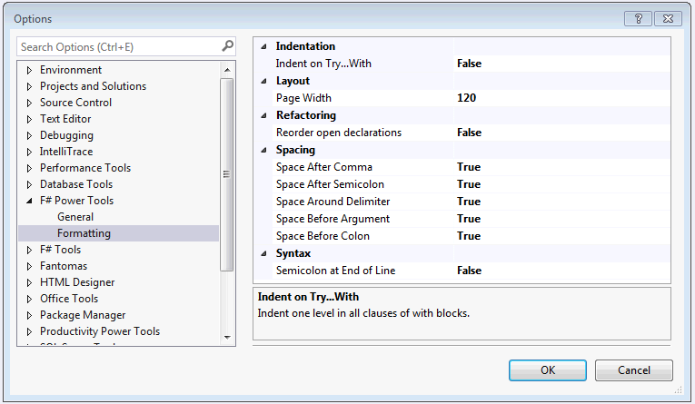

Source code formatting
Two main formatting commands are available:
- Formatting Document, available under Ctrl + K, Ctrl + D key combination.
- Formatting Selection / Formatting Cursor Position, available under Ctrl + K, Ctrl + F key combination.
Using Ctrl + K, Ctrl + F combination without a selection,
the smallest parseable block (inside [ and ], [| and |], { and } or ( and )) will be formatted.
To illustrate, the following example
type Type = TyLam of Type * Type | TyVar of string | TyCon of string * Type list with override this.ToString () = match this with | TyLam (t1, t2) -> sprintf "(%s -> %s)" (t1.ToString()) (t2.ToString()) | TyVar a -> a | TyCon (s, ts) -> s
will be rewritten to
type Type = | TyLam of Type * Type | TyVar of string | TyCon of string * Type list override this.ToString() = match this with | TyLam(t1, t2) -> sprintf "(%s -> %s)" (t1.ToString()) (t2.ToString()) | TyVar a -> a | TyCon(s, ts) -> s
The main formatting options are available under "Tools --> Options --> F# Power Tools --> Formatting" dialog.

To be consistent with Visual Studio editors, the last option, indent size, could be adjusted under "Tools --> Options --> Text Editor --> F# --> Tabs" (looking for "Indent size" option).
type Type =
| TyLam of Type * Type
| TyVar of string
| TyCon of string * Type list
override ToString : unit -> string
Full name: Codeformatting.Version1.Type
| TyLam of Type * Type
| TyVar of string
| TyCon of string * Type list
override ToString : unit -> string
Full name: Codeformatting.Version1.Type
union case Type.TyLam: Type * Type -> Type
union case Type.TyVar: string -> Type
Multiple items
val string : value:'T -> string
Full name: Microsoft.FSharp.Core.Operators.string
--------------------
type string = System.String
Full name: Microsoft.FSharp.Core.string
val string : value:'T -> string
Full name: Microsoft.FSharp.Core.Operators.string
--------------------
type string = System.String
Full name: Microsoft.FSharp.Core.string
union case Type.TyCon: string * Type list -> Type
type 'T list = List<'T>
Full name: Microsoft.FSharp.Collections.list<_>
Full name: Microsoft.FSharp.Collections.list<_>
val this : Type
override Type.ToString : unit -> string
Full name: Codeformatting.Version1.Type.ToString
Full name: Codeformatting.Version1.Type.ToString
val t1 : Type
val t2 : Type
val sprintf : format:Printf.StringFormat<'T> -> 'T
Full name: Microsoft.FSharp.Core.ExtraTopLevelOperators.sprintf
Full name: Microsoft.FSharp.Core.ExtraTopLevelOperators.sprintf
override Type.ToString : unit -> string
val a : string
val s : string
val ts : Type list
type Type =
| TyLam of Type * Type
| TyVar of string
| TyCon of string * Type list
override ToString : unit -> string
Full name: Codeformatting.Version2.Type
| TyLam of Type * Type
| TyVar of string
| TyCon of string * Type list
override ToString : unit -> string
Full name: Codeformatting.Version2.Type
override Type.ToString : unit -> string
Full name: Codeformatting.Version2.Type.ToString
Full name: Codeformatting.Version2.Type.ToString